Diagrammdatenschnitt
Graph-Data-Slicer
Neben dem Anwenden eines Filters auf ein Arbeitsblatt (d. h. Arbeitsblattdatenschnitt) können Sie Filter direkt auf ein Diagramm anwenden (d h. Diagrammdatenschnitt).
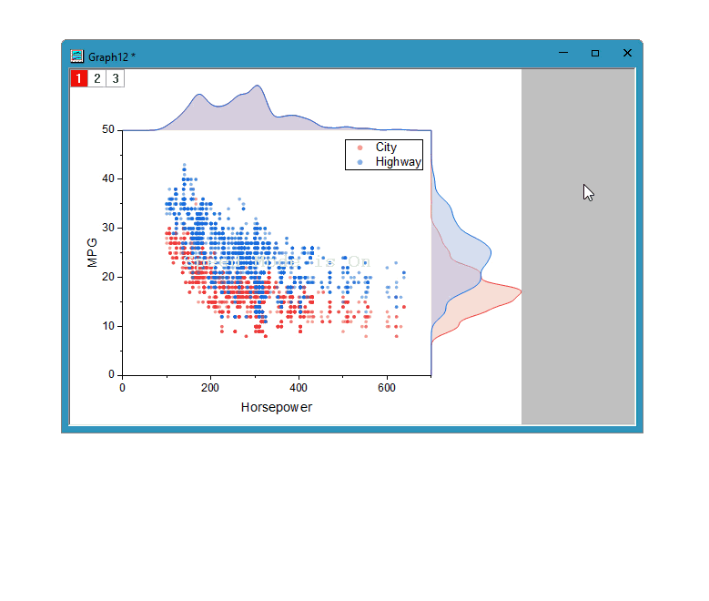
Arbeitsblattdatenschnitt vs. Diagrammdatenschnitt
- Ein ist ein arbeitsblattbasierter Filter.
- Wenn das Quellarbeitsblatt über einen Filter verfügt, wird durch das Einschalten des Datenfilters auf jedem Diagramm, das auf Grundlage dieses Arbeitsblatts gezeichnet wurde, der vorhandene Arbeitsblattfilter angewendet. Dies wird als Arbeitsblattdatenschnitt bezeichnet.
- Der Arbeitsblattdatenschnitt wird auf das Arbeitsblatt und auch auf alle Diagramme, die basierend auf diesem Arbeitsblatt gezeichnet wurden, angewendet. Das Ändern der Filter (Bedingung oder Status aktivieren/deaktivieren) im Diagramm aktualisiert das Arbeitsblatt und alle Diagramme, die auf diesem Arbeitsblatt basieren. Und umgekehrt.
- Ein ist ein diagrammbasierter Filter.
- Wenn das Quellarbeitsblatt über keinen Filter verfügt, wird durch das Einschalten des Datenschnitts auf jedem Diagramm, das basierend auf diesem Arbeitsblatt gezeichnet wurde, ein Popup-Dialog angezeigt, in dem Sie eine Spalte wählen können, auf die der Filter angewendet werden soll. Dieser Typ von Filter wird als Diagrammdatenschnitt bezeichnet
- Der Diagrammdatenschnitt wird nur auf das aktuelle Diagramm angewendet und hat KEINEN Einfluss auf die Daten im Quellarbeitsblatt. Das heißt, der Filter des aktuellen Diagramms hat keine Wirkung auf andere Diagramme, auch wenn sie alle auf Grundlage des gleichen Arbeitsblatts gezeichnet wurden. Wenn Sie das Diagrammfenster löschen, auf dem der Datenschnitt basiert, werden auch alle Analysen und Aktionen, die von diesem Datenschnitt abgeleitet sind, entfernt.
Wir empfehlen immer den Diagrammdatenschnitt, nicht nur, weil er nur das aktuelle Diagramm beeinflusst (und in diesem Sinn unabhängig vom Quellarbeitsblatt ist), sondern auch weil er mehr nützliche Funktionen aufweist, wie z. B. duplizierte Zeichnungen für Vergleiche. Er wird außerdem kontinuierlich weiterentwickelt.
Datenschnitt zu Diagramm hinzufügen
- Aktivieren Sie ein Diagramm, auf dessen Quellarbeitsblatt kein Datenfilter angewendet wurde.
- Wählen Sie im Menü Daten: Datenschnitt.
Oder
Klicken Sie auf die Schaltfläche Datenfilter hinzufügen/entfernen  auf der Symbolleiste Arbeitsblattdaten.
auf der Symbolleiste Arbeitsblattdaten.
Oder
Bewegen Sie den Cursor über den Rand der Diagrammseite, bis sich der Cursor in 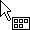
verwandelt. Klicken Sie einmal auf die leere Fläche, um die Minisymbolleiste auf Seitenebene aufzurufen. Klicken Sie auf die Schaltfläche Datenschnitt.
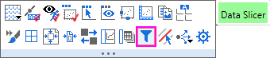
- Der Dialog Datenschnitt zu Diagramm hinzufügen wird geöffnet.
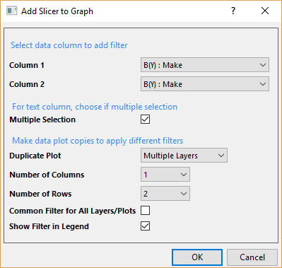
- Wählen Sie bis zu zwei Spalten, auf die Sie die Schnitte anwenden. Beachten Sie, dass Sie später jederzeit weitere Datenschnitte hinzufügen können.
- Wenn die ausgewählte Filterspalte ein Textformat hat, können Sie Mehrfachauswahl aktivieren, um das Auswählen von mehreren Elementen für die Filterbedingung zu aktivieren. Sie können auch zwischen Einzelauswahl und Mhrfachauswahl wechseln, nachdem der Datenschnitt hinzugefügt wurde. Siehe nächsten Abschnitt.
Der Datenschnitt, angewendet auf eine Text-/kategoriale Spalte, kann 2 Auswahlmodi haben:
Einzelauswahl vs. Mehrfachauswahl
|
Einzelauswahl
|
Mehrfachauswahl
|
| Eine Auswahlliste zum Auswählen von nur einem Element zur gleichen Zeit |
Eine Auswahlliste zum Auswählen von mehreren Elementen
Das Diagramm wird automatisch aktualisiert, wenn Sie ein Element auswählen/seine Auswahl aufheben.
Klicken Sie außerhalb der Liste, um die Auswahl fertigzustellen. |
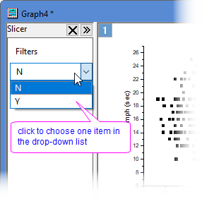
|
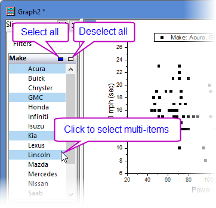 |
- Um verschiedene Filterbedingungen intuitiv zu vergleichen, können Sie Zeichnung duplizieren wählen.
| Zeichnung duplizieren |
- Es werden keine Zeichnungen dupliziert.
- Zeichnungen werden im gleichen Layer dupliziert. Für Diagramme mit mehreren Layern ist nur diese Option zum Duplizieren verfügbar.
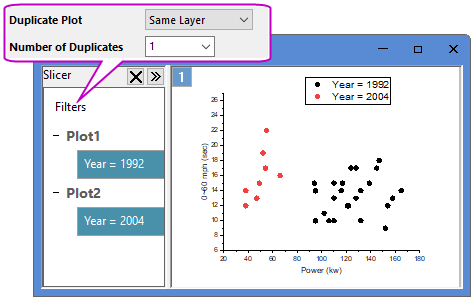
- Zeichnungen werden in mehrere Layer dupliziert. Diese Option ist nur für Diagramme mit einzelnem Layer verfügbar.
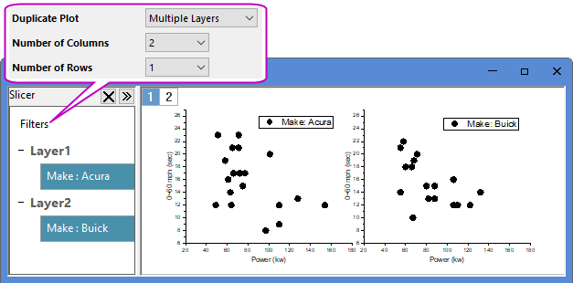
|
| Anzahl der Duplikate |
Wenn Zeichnung duplizieren = Gleicher Layer, verwenden Sie dieses Bearbeitungsfeld, um die Anzahl der duplizierten Zeichnungen festzulegen.
|
Anzahl der Spalten/
Anzahl der Zeilen |
Wenn Zeichnung duplizieren = Mehrere Layer, verwenden Sie diese Auswahllisten, um die Anzahl der Duplikate und das Bedienfeldlayout zu bestimmen.
Die Anzahl der Duplikate = Anzahl der Spalten X Anzahl der Zeilen - 1.
|
| Allgemeiner Filter für alle Layer/Zeichnungen |
- Bei Diagrammen mit mehreren Layern werden ALLE Filter, die Sie im Dialog Datenschnitt zu Diagramm hinzufügen definiert haben, auf ALLE Layer angewendet. Aktivieren Sie dieses Kontrollkästchen, um eine gemeinsame Filtersteuerung für alle Layer festzulegen. Dadurch wird die gleiche Filterbedingung auf alle Layer angewendet.
- Andernfalls hat jeder Layer seine eigene Filtersteuerung. In diesem Fall sind die Filter auf verschiedenen Layern unabhängig voneinander. Das heißt, Sie können unterschiedliche Filterbedingungen für verschiedene Layer festlegen, einen vorhandenen Filter entfernen oder neue Filter zu einem Layer hinzufügen, aber nicht andere Layer beeinflussen.
Sie können auch mit der rechten Maustaste auf einen Datenschnitt klicken und Filter zu allgemeinem Filter verschieben wählen, um alle Filter in eine gemeinsame Steuerung zu übertragen.
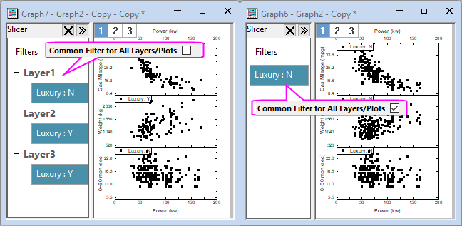
- Sie können sogar gemischte Bedienelemente in einem Diagramm haben, indem Sie einen neuen Filter auf Alle Zeichnungen oder Allgemeinen Filter zur Seite hinzufügen.

|
| Filter in Legende zeigen |
Aktivieren Sie dieses Kontrollkästchen, um die aktuelle Filterbedingung in der Legende zu zeigen. Die Legende wird automatisch aktualisiert, wenn der Filter sich ändert.
Beachten Sie, dass Sie Filterinformationen auch zum Layertitel hinzufügen können, indem Sie auf die Schaltfläche Layerfilter hinzufügen  auf der Minisymbolleiste auf Seitenebene klicken. auf der Minisymbolleiste auf Seitenebene klicken.
|
- Das Feld des Datenschnitts wird auf der linken Seite des Diagrammfensters gezeigt. Es führt die von Ihnen festgelegten Filter auf. Das Diagramm wird entsprechend aktualisiert. Sie können die aktuelle Filterbedingung anzeigen und ändern, mehr Filter hinzufügen, vorhandene Filter entfernen oder sie neu ordnen. Im nächsten Abschnitt finden Sie Einzelheiten dazu.
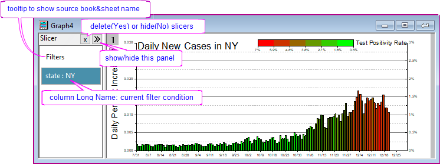
 |
Wenn das Quellarbeitsblatt (aus dem das Diagramm erstellt wurde) einen oder mehrere Filter hat, werden, unabhängig davon, ob der Filter aktiviert ist oder nicht, durch das Einblenden des Datenschnittfelds (über die Schaltfläche Datenfilter ) alle Arbeitsblattfilter auf das Diagrammfenster übertragen.
In diesem Fall KÖNNEN Sie KEINEN neuen Schnitt hinzufügen. Sie können nur die vorhandenen Filter anzeigen und bearbeiten. Siehe die verfügbaren Ausgaben im nächsten Abschnitt.
|
Filtersteuerung
- Ein Rechtsklick auf die leere Fläche innerhalb des Bedienfelds Datenschnitt ruft die Kontextmenüs auf, mit denen Sie Filter kopieren/einfügen, Filter hinzufügen und Layer mit Filtern duplizieren können.
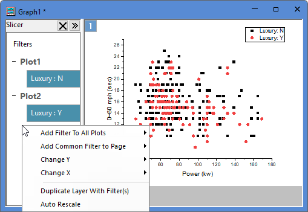
| Filter zu allen Zeichnungen hinzufügen |
Wählen Sie eine Spalte aus der Teilmenüliste, um einen neuen Filter auf Layerebene hinzuzufügen, der auf alle Zeichnungen in allen Layern angewendet wird, aber über eine unabhängige Filtersteuerung auf jeder Layerebene verfügt. In diesem Fall können Sie unterschiedliche Filterbedingungen für verschiedene Layerfilter zum Vergleich festlegen. |
| Allgemeinen Filter zur Seite hinzufügen |
Wählen Sie eine Spalte aus der Teilmenüliste, um einen neuen Filter auf Seitenebene hinzuzufügen, der auf alle Zeichnungen in allen Layern angewendet wird und über eine gemeinsame Steuerung auf Seitenebene verfügt. |
X ändern/
Y ändern |
Ändern Sie XY, wenn alle Layer die gleiche XY-Spalte teilen, und skalieren Sie neu, um alles zu zeigen. |
| Layer mit Filter duplizieren |
Duplizieren Sie zum Vergleich Layer mit Filtern in das aktuelle Diagramm. |
| Automatisch neu skalieren |
Aktivieren Sie dieses Element, um Achsen entsprechend der Filterergebnisse automatisch neu zu skalieren. |
- Ein Rechtsklick auf einen Datenschnitt ruft eine Kontextliste zum Deaktivieren/Löschen, Neuordnen, Bearbeiten von Filtern auf.
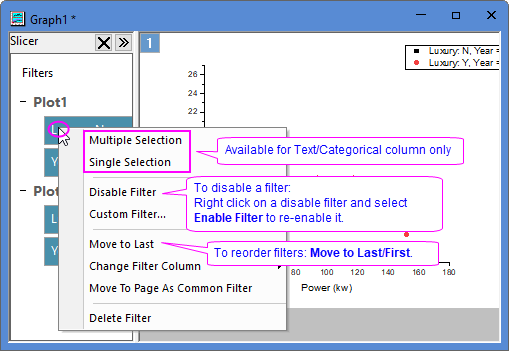
Mehrfachauswahl/
Einzelauswahl |
Die Filter auf einer Text-/kategorialen Spalte können eine Mehrfachauswahl und eine Einzelauswahl haben. Wählen Sie das Menüelement, um zwischen den zwei Auswahlmodi zu wechseln.
|
Benutzerdefinierter Filter/
Bedingungstyp ändern |
Es werden verschiedene Optionen bereitgestellt, je nach Format der Spalte, auf die der Filter angewendet wird.
- Text & Kategorial
- Klicken Sie mit der rechten Maustaste auf eine Text- oder kategorialen Datenschnitt und wählen Sie im Kontextmenü Benutzerdefinierter Filter..., um den Dialog Benutzerdefinierter Filter (erweiterter Text) für die weiterführende Bearbeitung zu öffnen. Auf dieser Seite können Sie lesen, wie ein Textfilter eingerichtet wird.
- Numerisch
- Für das einfache Bearbeiten klicken Sie auf einen numerischen Datenschnitt, um den Dialog Einfacher numerischer Filter zu öffnen, oder klicken Sie mit der rechten Maustaste auf den Datenschnitt, um im Kontextmenü Bedingungstyp ändern auszuwählen und eine Bedingung in der Popup-Liste auszuwählen.
- Klicken Sie mit der rechten Maustaste und wählen Sie im Kontextmenü Benutzerdefinierter Filter..., um den Dialog Benutzerdefinierter Filter (erweiterter Text) für die weiterführende Bearbeitung zu öffnen. Auf dieser Seite können Sie lesen, wie ein numerischer Filter eingerichtet wird.
- Wählen Sie Bedingungstyp ändern: Laden, um eine gespeicherte Filterbedingung zu laden.
- Datum & Zeit
- Für das einfache Bearbeiten klicken Sie auf einen Datums- und Zeitdatenschnitt, um den Dialog Einfacher Datumsfilter zu öffnen, oder klicken Sie mit der rechten Maustaste auf den Datenschnitt, um im Kontextmenü Bedingungstyp ändern auszuwählen und eine Bedingung in der Popup-Liste auszuwählen.
- Klicken Sie mit der rechten Maustaste und wählen Sie im Kontextmenü Benutzerdefinierter Filter..., um den Dialog Benutzerdefinierter Filter (erweiterter Text) für die weiterführende Bearbeitung zu öffnen. Auf dieser Seite können Sie lesen, wie ein Datumsfilter eingerichtet wird.
- Wählen Sie Bedingungstyp ändern: Laden, um eine gespeicherte Filterbedingung zu laden.
|
| Filterspalte ändern |
Wählen Sie eine Spalte aus der Auswahlliste, um zum aktuellen Filter zu wechseln.
|
| Als allgemeinen Filter zur Seite verschieben |
Wählen Sie für einen Datenschnitt, basierend auf dem aktuellen Layer, dieses Element, um es auf Seitenebene zu verschieben, so dass die Filterbedingung auf ALLE Layer (alle Zeichnungen) angewendet und die gleiche Filtersteuerung geteilt wird.
|
| Filter löschen |
Löschen Sie ausgewählte Datenschnitte.
- Sie können auch auf die Schaltfläche Datenfilter hinzufügen/entfernen auf der Symbolleiste Worksheet Daten klicken, um ALLE Datenschnitte im aktuellen Diagrammfenster zu entfernen.
- Beachten Sie, dass alle Analysen, die aus den Schnitten abgeleitet wurden, auch entfernt werden.
|
Diagramm mit Datenfilter untersuchen
Gefilterte Daten extrahieren
Klicken Sie mit der rechten Maustaste auf die gefilterte Zeichnung und wählen Sie Kopie des Datenschnitts als neue Mappe erstellen.
Eine Arbeitsmappe mit dem Namen Slicer wird erstellt, die die gefilterten Daten enthält. Die Filterbedingung wird in den benutzerdefinierten Parametern gezeigt.
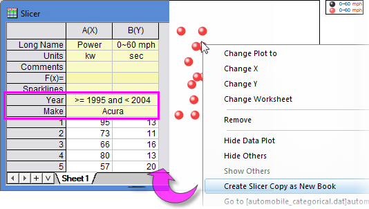
Analyse eines Diagramms mit Diagrammdatenschnitt
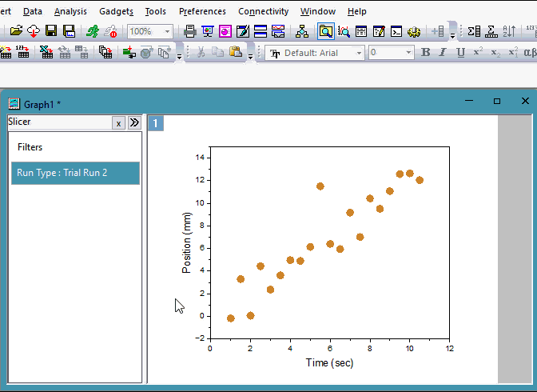
Dinge, die Sie wissen müssen ...
- Wenn Sie Ihre Analyseergebnisse bei Änderungen der Filterbedingung neuberechnen möchten, müssen Sie den Datenschnitt VOR der Durchführung der Analyseoperation hinzufügen. Wenn Sie zum Beispiel das angepasste Kurvendiagramm aus dem Berichtsblatt Linear Fit öffnen
und einen Datenschnitt hinzufügen, dann werden die Ergebnisse der linearen Anpassung bei Änderung der Filterbedingung NICHT aktualisiert.
- Jede Analyse, die auf ein Diagramm mit Datenschnitt(en) durchgeführt wird, basiert auf den gefilterten Daten und ist unabhängig von den Quelldaten. Die Analyseergebnisse werden in eine verborgene Arbeitsmappe ausgegeben, die durch Klicken auf das grüne Schloss der Analyse und Auswahl von Gehe zu Ergebnissen aktiviert wird. Durch Klicken auf das grüne Schloss im Berichtsblatt oder auf den Link in der Tabelle Notizen > Zelle Datenfilter können Sie zum Quelldiagramm gelangen.
- Denken Sie immer dran, dass das Löschen des Diagrammfensters alle Operationsausgaben, die auf dem Diagrammdatenfilter basieren, auch löscht.
- Wenn Sie eine Analyse auf ein Diagramm mit Datenschnitt durchführen, wird beim Duplizieren des Diagramms ein Dialog angezeigt, der Sie fragt, ob die Analyseoperationen und -ausgaben eingeschlossen werden sollen.
-
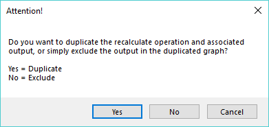
- Klicken Sie auf Ja, um sowohl das Diagramm als auch die Analyse zu duplizieren (Operationen und zugehörige Ausgaben). In diesem Fall aktualisiert das Ändern der Filterbedingung oder Analyseparameter nur das aktuelle Diagrammfenster, nicht das andere Fenster.
- Klicken Sie auf Nein, um nur das Diagramm, aber nicht die Analyse zu duplizieren.